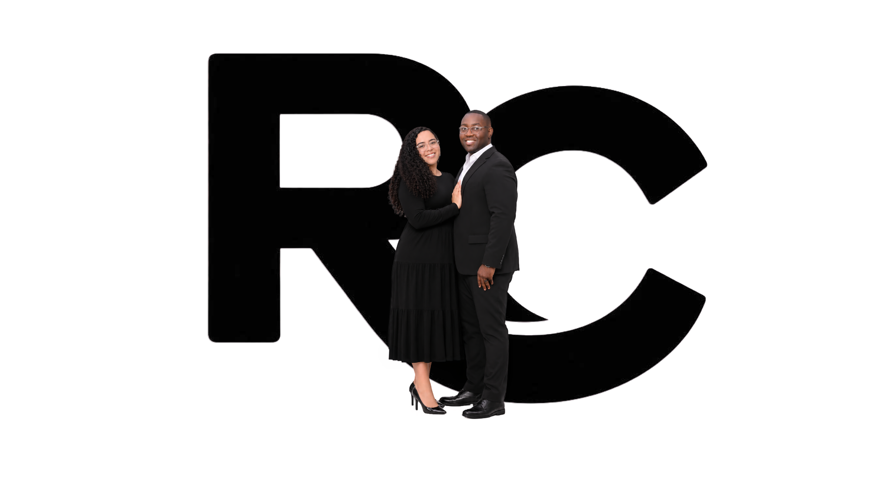

Start with their story.
Every person comes with experiences, questions, hopes, and hurts. We want to make room for honest conversations and listen without rushing to answers.
01 ↗
MORE THAN A NAME. A HEART FOR PEOPLE.We are Rich and Kim James. Before titles, schedules, or Sunday gatherings, we are two people who love Jesus and believe every person deserves to be known, heard, and loved.
Get to know usMinistry has never been just something we do. It has shaped how we live, love, lead, and show up for others.
Both of us have served in youth ministry for more than 10 years, walking with young people and families through questions, celebrations, and difficult seasons. We have also helped launch multiple churches, serving wherever needed as communities of faith took root.
Rich’s journey began with music and worship and grew through biblical studies, licensed ministry, evangelism, and youth leadership in South Texas, including district service. Kim has spent those same years investing in youth, families, and relationships across ministry and community life. Our shared calling has always been to help people discover and follow Jesus.
What stays with us is never the title or the size of a gathering. It is the conversations after service, the prayers shared in difficult seasons, and the privilege of helping someone take one more step with Christ.
Our family story reaches across cultures, languages, and coastlines.
Latin American and Spanish-speaking traditions, Caribbean island heritage, West African roots, and American experiences have all shaped our view of home, hospitality, and community.
They remind us that every person arrives with a story worth hearing. Differences are not walls to get past; they are opportunities to listen, learn, laugh, and make room for one another.
Our backgrounds in service-based industries have taught us something simple: the most meaningful work begins with people, not processes. Listening, showing up, and treating others with dignity are more than professional habits—they are part of how we live our faith.
Every person comes with experiences, questions, hopes, and hurts. We want to make room for honest conversations and listen without rushing to answers.
01 ↗For us, compassion is practical. It looks like being present, showing kindness, extending a hand, and making sure nobody feels overlooked.
02 ↗Whether we meet across a table, in the community, or at church, our desire is the same: know people by name and build relationships rooted in trust.
03 ↗Worship has been part of our lives in song, prayer, service, and the quiet choices nobody sees. We believe the Word of God belongs in real conversations and ordinary days—not only behind a pulpit.
Parenthood has deepened our gratitude and our sense of responsibility. We want to raise a family and help build a church where faith is practiced at home, grace is extended freely, and people grow together.
We are not interested in religion as usual—activity without relationship, polished words without honest conversation, or a room full of people who still feel alone.
If you are looking for a place to ask questions, laugh, be honest, or simply be yourself, we would love to meet you.
There is no pressure to have everything figured out. Let’s start with a real conversation. Tell us your story, and we’ll share ours.
No agenda. No sales pitch. Just two people who would love to get to know you.